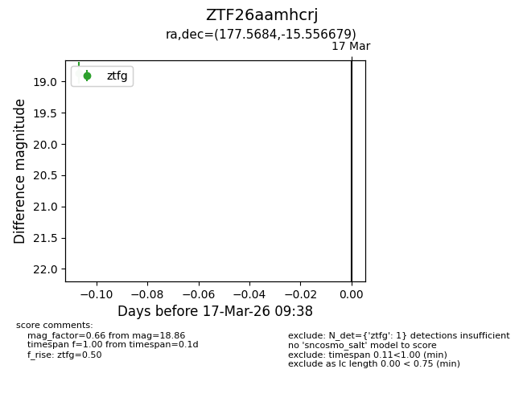
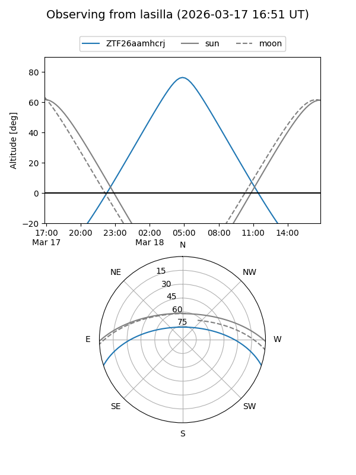
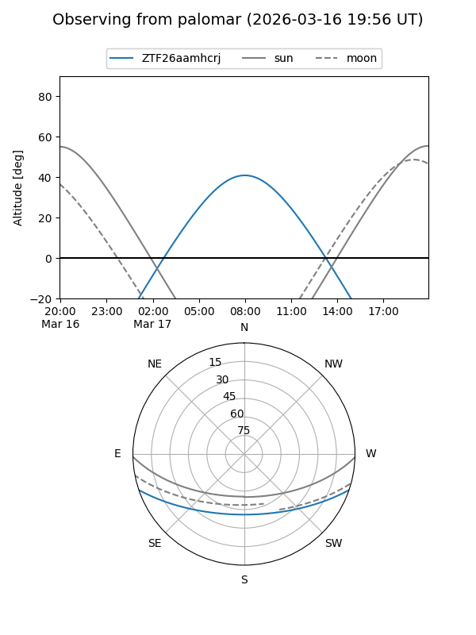

ZTF26aamhcrj
Target ZTF26aamhcrj at 2026-03-17 09:40
Aliases and brokers:
FINK: link
Lasair: link
ALeRCE: link
alt names
ZTF26aamhcrj (ztf,fink_ztf)
Coordinates:
equatorial (ra, dec) = 177.5684,-15.55668
equatorial (HMS+DMS) = 11:50:16.42,-15:33:24.04
galactic (l, b) = (281.9482,+44.80856)
Flags:
Photometry:
last ztfg=18.86
1 ztfg detections
Lightcurve

Visibility


Additional plots